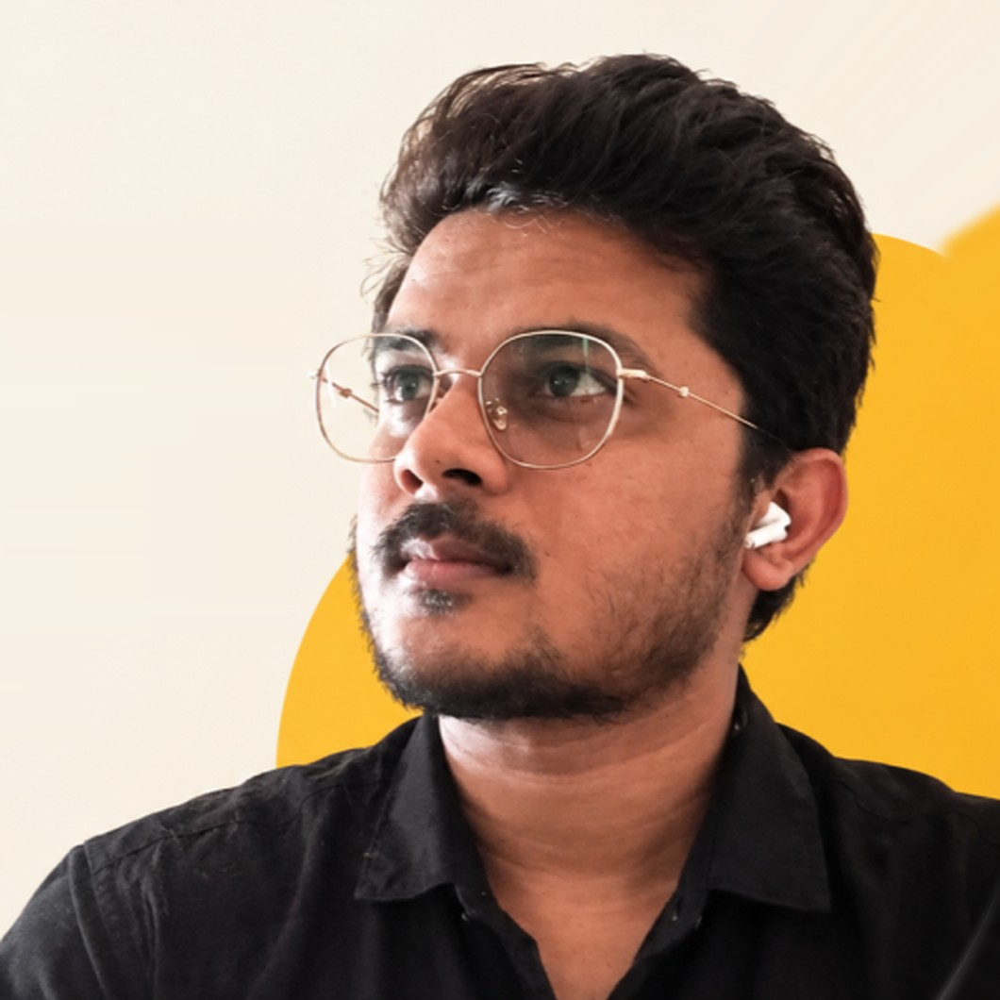

A Senior UX Designer in Mumbai who designs screens people can’t afford to misread: motorcycle clusters read at speed, clinical devices used by paramedics, legal help for street vendors who can’t read English.
My path into design started in engineering. I spent three years at Infosys configuring client networks before moving into UX in 2018, and I still ask an engineer’s questions when I design: what has to work, for whom, and under what constraints.

For the past 8 years I’ve designed products people rely on under pressure: motorcycle clusters read at speed, emergency-care devices used by paramedics, and a Hindi-first app for street vendors with low literacy. Since 2021 I’ve led UX at PeepalDesign for clients including Bajaj Auto and Philips, usually with a small team and a junior designer to mentor.
Lately I’ve been building AI into how design teams work: GapScan, an internal tool that audits products for UX gaps, and Claude and ChatGPT skills my team uses on client work. I also sit on the Board of Studies at Royal Higher Education Society’s College in Thane.
“Design is how it works.”
Steve Jobs
More work at PeepalDesign
PeepalDesign · May 2026 – Present
AI tools, company website and new business
Built GapScan, an internal AI tool that audits products for UX gaps, and an app that extracts a live website’s design system. Created Claude and ChatGPT skills for the team, designed in-house AI apps, and redesigned PeepalDesign’s website.
Philips · Nov 2025 – May 2026
Philips Displays global website
Restructured navigation and IA across regional sites, with a modular pattern library.
Bajaj Auto · Dec 2025 – Jan 2026 · 3 of 3
Chetak EV owner app UI revamp
A focused 2–4 week visual refresh of the Chetak owner app.
HealthAssyst · Jan – Mar 2024
Clinical management module
UX for an analytics-driven clinical management module, aimed at reducing task friction and data-entry errors.
Under NDA · happy to walk through it in an interview
Philips · Dec 2023 – May 2024
Emergency care and monitoring (Tempus Pro)
Companion app for remote vitals and a modernised device UI built to homologation and accessibility standards, with a UI system shared across clinical devices. Tested with paramedics.
Under NDA · happy to walk through it in an interview
Before PeepalDesign
UX Designer
Feb 2020 – Mar 2021
White Digital · Mumbai
Led the design team at a digital marketing agency, running market research and shaping UX for clients.
Designed responsive websites and web apps across several industries.
UX Designer
Nov 2018 – Dec 2019
Infosys · Bengaluru
Designed a machine-learning product that reduced dispatcher workload in IT service management.
Led design of a gamification platform for internal idea-sharing.
Built a client-management portal for gathering automation requirements.
System Engineer
Oct 2015 – Oct 2018
Infosys · Bengaluru
Designed network configurations for client environments: connectivity, performance and security.
Board of Studies Member
Jun 2024 – Present
Royal Higher Education Society’s College, Thane
Skills
Design
Interaction design, information architecture, design systems, HMI / cluster design, mobile and responsive web
Research
Field research, usability testing, stakeholder workshops, journey mapping
Quality
Accessibility, medical and homologation standards, low-literacy design
AI
Claude, Claude Design, ChatGPT, Cursor, Figma Make, Figma AI, Google Stitch, custom skills and plugins
Tools
Figma, FigJam, Axure RP, Adobe XD, prototyping
Code
HTML, CSS, JavaScript, Python
Education and certifications
2019 – 2021
MS, Information Technology, University of Mumbai
2012 – 2015
B.Sc., Computer Science, University of Mumbai
2022
Google UX Design Professional Certificate
2021 – 2022
UXPM Level 1 and 2, UX Alliance
Designing with AI
I design and build AI tools for PeepalDesign. These are the principles I work to, drawn from Microsoft’s Human-AI Interaction guidelines and Google’s People + AI Guidebook.
Set honest expectationsSay what the AI can do and how well, so people don’t over-trust it.
Explain the whyShow the reason or source behind an output, so people can judge it.
Keep people in controlAI drafts and suggests. People approve, edit, dismiss or undo.
Design for being wrongPlan for wrong or unsure answers, and always keep a manual path.
Confirm before actingAgents ask before anything irreversible, then show what they did.
Fair and private by defaultTest with different users, and be clear about what data is used.